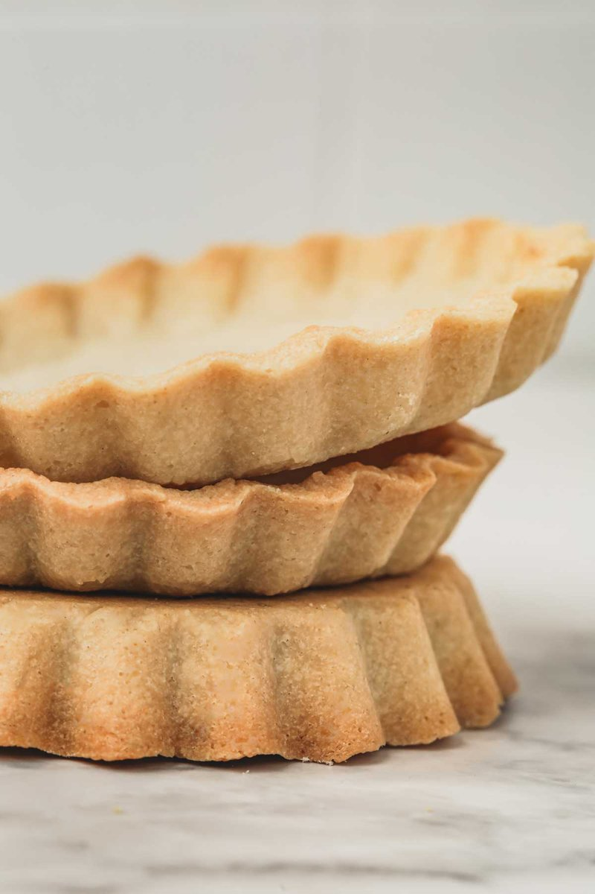

Pâte sablée
Ingrédients
×
- 1 oeuf
- 1 pincée de sel
- 100 g de sucre en poudre
- 200 g de farine
- 100 g de beurre

Préparation
Étape 1
Battre 1 oeuf à la fourchette avec 1 pincée de sel et 100 g de sucre en poudre jusqu’à ce que ce soit mousseux.
Étape 2
Ajouter d’un coup 200 g de farine et mélanger grossièrement. Sabler la pâte entre les doigts.
Étape 3
Incorporer 100 g de beurre en petits morceaux et pétrir jusqu’à ce que la pâte ne colle plus aux mains (ajouter un peu de farine si besoin).
Étape 4
Foncer le moule et piquer la pâte à la fourchette.
Conseils
Peut aussi se faire au robot ou au Thermomix.
Résumé
1 oeuf
1 pincée de sel
100 g de sucre en poudre
Battre
200 g de farine
Sabler
100 g de beurre
pétrir
Foncer